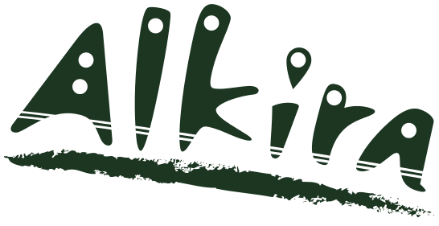

We aim to make the best products that suite your needs. 
This sidenav is locked open on your device. To go back to the default behavior, narrow your display.
© 2014 Alkira International, Inc. · Privacy · Terms
The left sidenav will 'lock open' on a medium (>=960px wide) device.